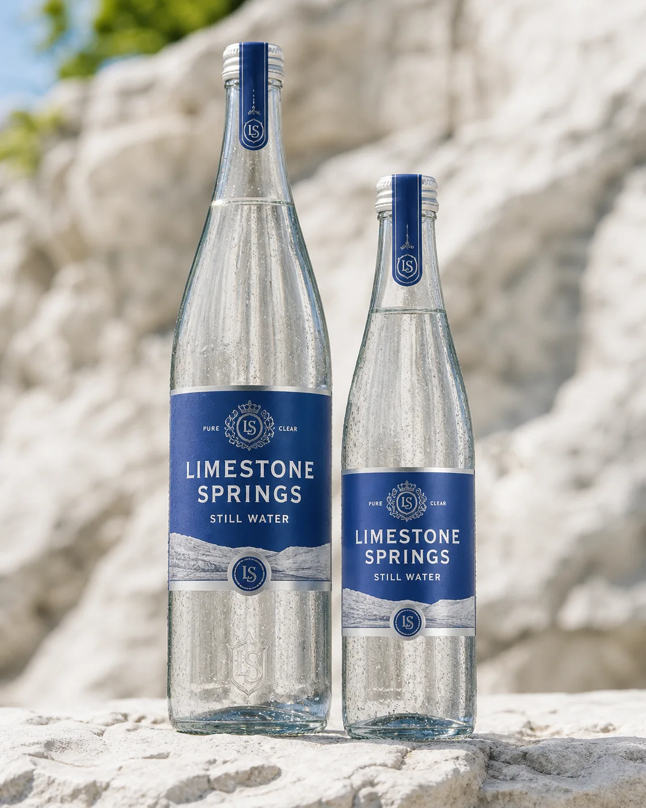
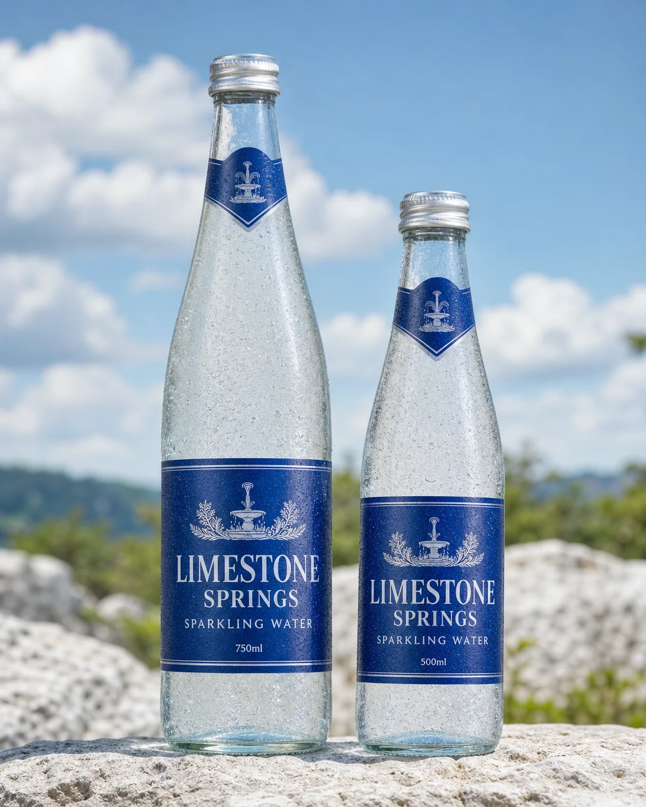
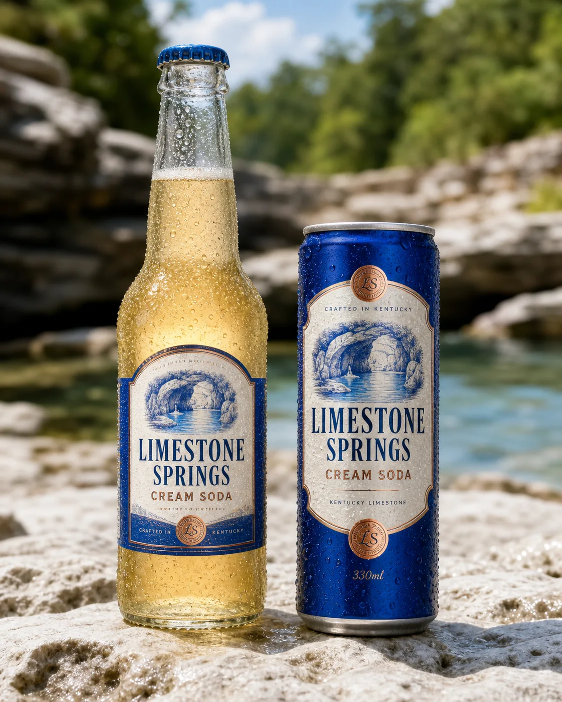

Still Water
Served with meals and included in the overnight welcome. Simple, chilled water in the familiar blue-labelled bottle.
Frankfort, Kentucky · Water, sodas & mixers
Familiar waters, sodas and mixers with Kentucky roots and an everyday place in shops around the world.
Limestone Springs was founded in Frankfort, Kentucky, in 2002. Its full beverage range launched in 2015, building a business in waters, sodas and mixers around Kentucky limestone-filtered water.
Part of Hatfield Group within Walker Holdings, Limestone Springs is an established global brand sold in more than ninety countries. Selected waters, mixers and sodas are routinely found in supermarkets, convenience stores, independent neighbourhood shops, hotels, restaurants, cocktail bars and airports.
At Albury, house still and sparkling water, Soda/Club Soda, mixers and bottled soft drinks are Limestone Springs. The available range supports the occasion and the actual order. The producer’s own labels remain part of table and bar service.
Kentucky-source still and sparkling water is bottled at source. Mixers and sodas also use audited regional manufacturing to Limestone specifications, with actual production origin stated on pack. Properly brewed Cream Soda retains its brewing process.

Served with meals and included in the overnight welcome. Simple, chilled water in the familiar blue-labelled bottle.

For the table or a long drink, and paired with still water in the welcome basket.

Properly brewed and best enjoyed cold, in its own producer packaging.
The full Limestone Springs house range covers Soda/Club Soda; Premium, Light, Elderflower and Aromatic tonics; Ginger Beer and Ginger Ale; Cola, Lemon, Blood Orange, Root Beer, Cream Soda and Bitter Lemon, plus Tonic Syrup. The current chilled selection is confirmed by the team.